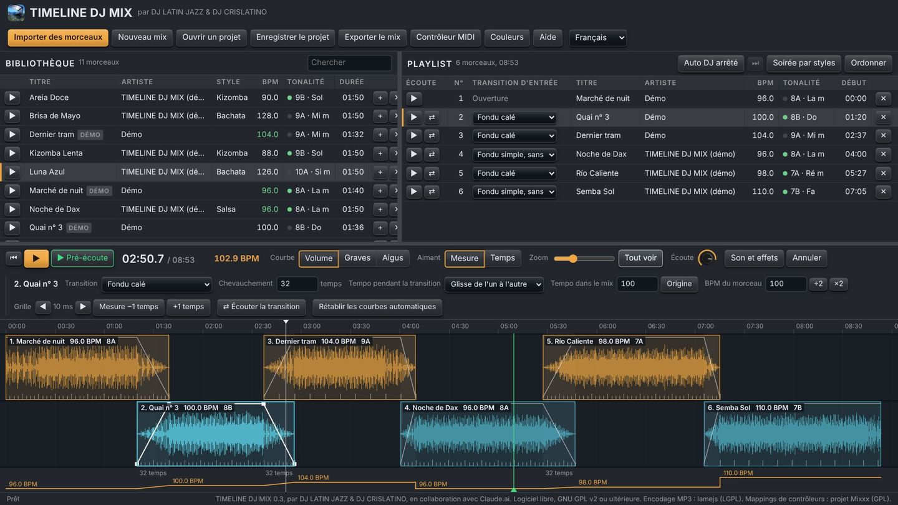
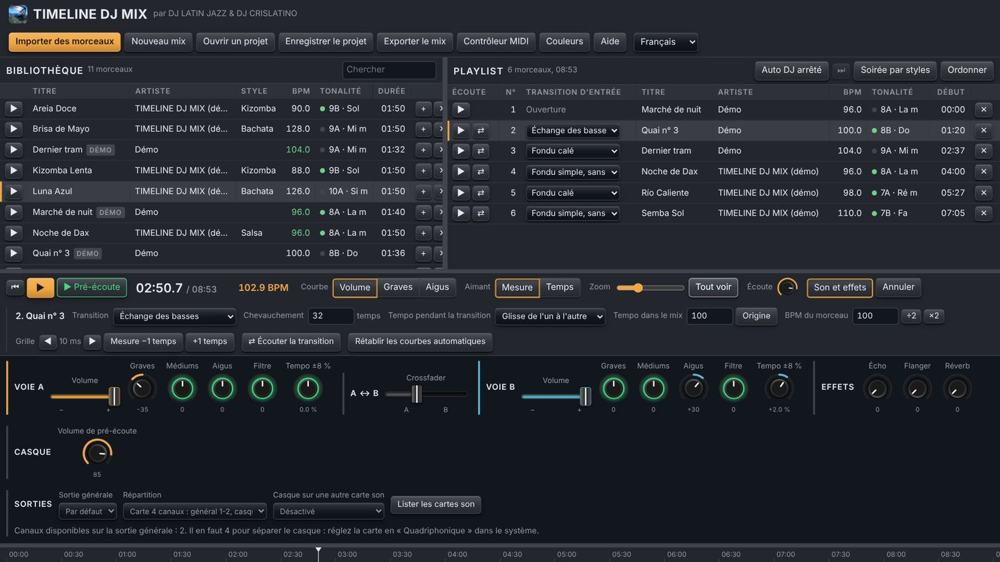
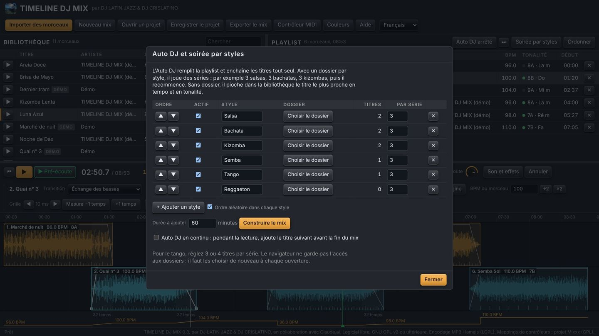
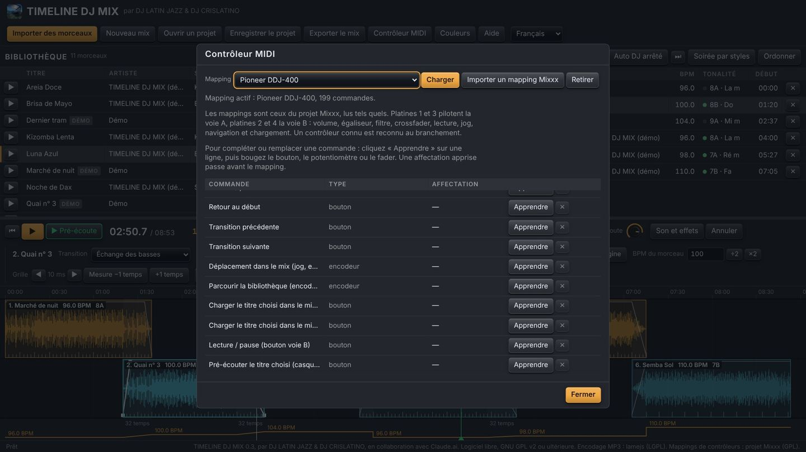

par DJ LATIN JAZZ & DJ CRISLATINO, en collaboration avec Claude.ai
Le mix monté sur une timeline : chaque morceau est calé au tempo et enchaîné au précédent, vous réglez les transitions à la souris, puis vous exportez la soirée en MP3, FLAC, WAV ou AIFF.
La playlist devient une timeline, et chaque transition se règle au temps près.
Chaque morceau est calé au tempo et enchaîné avec le précédent. Glissez un bloc pour régler le chevauchement, tirez ses bords pour couper le début ou la fin.
Fondu calé, échange des basses, entrée franche, fondu simple ou coupe. Courbes de volume, de graves et d'aigus à dessiner à la souris.
BPM, grille des temps et tonalité analysés à l'import, avec le code de la roue harmonique (8A, 9B…) et une pastille verte pour les tonalités compatibles.
Écoutez un morceau ou une transition sans arrêter le mix. La ligne verte se place où vous voulez ; avec une carte 4 canaux, le casque sort sur 3-4.
Des séries de salsas, bachatas, kizombas, sembas ou tangos depuis vos dossiers, ou le titre le plus proche en tempo et en tonalité.
Volume, égaliseur 3 bandes, filtre et tempo ±8 % par voie, crossfader, écho, flanger et réverb, en vue contrôleur DJ ou en vue simple.
Les mappings Mixxx sont lus tels quels : Pioneer, Numark, Hercules, Reloop, Allen & Heath, Traktor Z1… L'apprentissage MIDI fait le reste.
MP3, FLAC, WAV ou AIFF, avec la liste des titres minutée. Modifier un morceau en attente ne coupe jamais celui qui joue.
Français, anglais, espagnol, portugais, italien, allemand, grec, russe, chinois et japonais, sans redémarrer. Couleur du fond et des boutons au choix.
Le tour complet des fonctions, du premier morceau importé jusqu'à l'export, avec le changement de langue.
Les captures suivent la langue choisie en haut de la page.




Gratuit, sans publicité, sans compte.
Chaque notice existe aussi en PDF, à imprimer ou à garder sur l'ordinateur.
Si le logiciel vous rend service en soirée, un petit don aide à le faire évoluer : nouveaux contrôleurs, nouvelles langues, corrections.
Dons sur Ko-fi : montant libre, par carte bancaire ou PayPal, sans créer de compte.